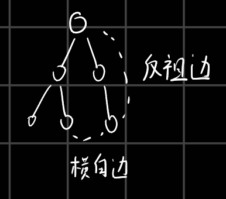
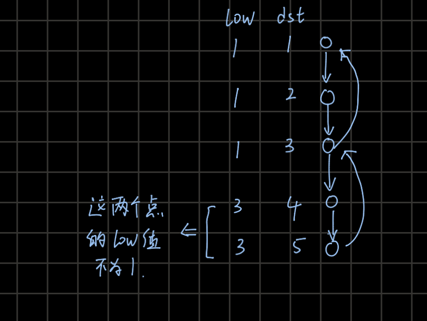
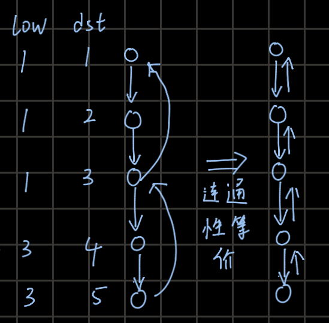
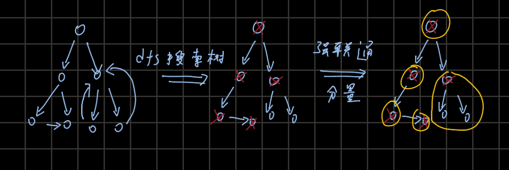

参考资料
1.
Kosaraju算法
2.
tarjan算法
tarjan算法中，横向边和反祖边是什么
反祖边：将dfs搜索过程建立成树，那么图中点a的一些边指向a的祖先，则称这些边为返祖边。（根节点到达a点路径中的所有点都成为是a的祖先）
横向边：使用dfs访问节点，在访问到a点时，a存在一些边指向已经访问过且不是a祖先的节点，这样的边横向边称为
在无向图中，tarjan算法不会生成横向边，因为AB两个区域出现横向边时，在访问A区域时会通过AB间的横向边访问到B区域，此时的横向边也变成了返祖边。只有在有向图中会出现横向边。

边的分类
无向图中的tarjan算法
tarjan算法通过搜索树判断无向图中的割点和桥。一个点删除后产生连通分量如大于一，则这个点叫做割点。一个边删除后产生联通分量如大于1，则这个边叫做桥。
为正确的找到 割点和桥，需要tarjan中的dst和low数组. ##
low和dst数组的概念
tarjan借助于dfs与low数组实现，dfs过程会产生dfs搜索树。将在树中搜索的节点顺序记作为dst数组，使用节点low表示dfs树中当前节点以及其子树中通过反向边到达的祖先节点的最小编号（注意无向图中不存在横向边，只有无向边），其中当前节点指向父节点的边不为反向边。
1. 割点的求法
如果一个点是割点，那么在dfs搜索树上割点的子节点一定不能通过其他反向边访问到割点的父节点，在low和dst上的表现是，割点的low
==
dst值。割点还有一种情况，如果当前点为根节点，那么只有在根节点在dfs树中有多个子节点时才将根节点视为割点。
2. 桥的求法
如果一个边是桥，那么在dfs搜索树中，如果ab相连，a是b的父节点，则low[b] > dst[a]表示ab边是一个桥，因为low[b] <= dst[a]表示b点或者b点dfs子树中节点可以访问到a点或a点之前的节点，故ab不是一个桥。
1
2
3
4
5
6
7
8
9
10
11
12
13
14
15
16
17
18
19
20
21
22
23
24
25
26
27
28
| const int maxx = 2e4 + 10;
vector<int> G[maxx];
int dst[maxx], low[maxx],vis[maxx], ge[maxx], cnt = 0;
void dfs(int now_posi, int pre_posi) {
dst[now_posi] = low[now_posi] = ++cnt;
vis[now_posi] = 1;
int son_number = 0;
for (int v : G[now_posi]) {
if (v == pre_posi)
continue;
if (vis[v] == 1) {
low[now_posi] = min(low[now_posi], dst[v]);
} else {
son_number++;
dfs(v, now_posi);
low[now_posi] = min(low[now_posi], low[v]);
if (pre_posi != -1 && low[v] >= dst[now_posi]) {
ge[now_posi] = 1;
}
}
}
if (pre_posi == -1) {
if (son_number > 1) {
ge[now_posi] = 1;
}
}
}
|
1
2
3
4
5
6
7
8
9
10
11
12
13
14
15
16
17
18
19
20
21
22
23
| int low[MAXN], dfn[MAXN], dfs_clock;
bool isbridge[MAXN];
vector<int> G[MAXN];
int cnt_bridge;
int father[MAXN];
void tarjan(int u, int fa) {
father[u] = fa;
low[u] = dfn[u] = ++dfs_clock;
for (int i = 0; i < G[u].size(); i++) {
int v = G[u][i];
if (!dfn[v]) {
tarjan(v, u);
low[u] = min(low[u], low[v]);
if (low[v] > dfn[u]) {
isbridge[v] = true;
++cnt_bridge;
}
} else if (dfn[v] < dfn[u] && v != fa) {
low[u] = min(low[u], dfn[v]);
}
}
}
|
有向图中的tarjan算法
1. 寻找强连通分量
利用low数组和dst数组。dst表示按照dfs展开树访问顺序得到的时间标号，low数组表示当前节点通过反向边或者子树中节点通过反向边能到达的最早访问节点，注意一定是反向边，如果是横向边并不能得到一个环，只有反向边会得到环。由此可见，相同low值的点应该为一个强连通分量。
注意low值并不是表示通过多个反向边到达的最早访问节点的编号值，而是当前节点和子节点只用一次反向边到达最早位置的值。

low_dst
dfs过程会产生一个dfs搜索树，当一个节点的low值小于dst值时，说明当前节点一定能访问到父节点，使得在dfs有向树中的节点与父节点之间的连通性可从有向边退化为无向边。

lian_tong_xing
所以只要计算出节点的low、dst值和dfs搜索树。根据low与dst之间的大小关系，修改dfs搜索树中节点与父节点之间的联通关系。在代码中可以以dst
==
low的节点为分界点,从分界点到下一个子树中分界点之间的所有点可以视为一个强连通分量。示意图和代码如下：

红叉为dst =
low的点，黄圈为强连通分量
1
2
3
4
5
6
7
8
9
10
11
12
13
14
15
16
17
18
19
20
21
22
23
24
25
26
27
28
29
30
31
32
33
34
35
| const int maxn = 1e5 + 10;
int id[maxn],id_num;
int low[maxn],dst[maxn],now_time;
stack<int>s;
int vis[maxn];
void dfs(int now_posi){
low[now_posi] = dst[now_posi] = now_time++;
vis[now_posi] = -1;
s.push(now_posi);
for(int i = 0;i < G[now_posi].size();i++){
int next_posi = G[now_posi][i];
if(vis[next_posi] == 0){
dfs(next_posi);
low[now_posi] = min(low[now_posi],low[next_posi]);
}
if(vis[next_posi] == -1){
low[now_posi] = min(low[now_posi],dst[next_posi]);
}
if(vis[next_posi] == 1){
}
}
vis[now_posi] = 1;
if(low[now_posi] == dst[now_posi]){
while(!s.empty()){
int top_value = s.top();
s.pop();
id[top_value] = id_num;
if(top_value == now_posi)break;
}
id_num++;
}
}
|